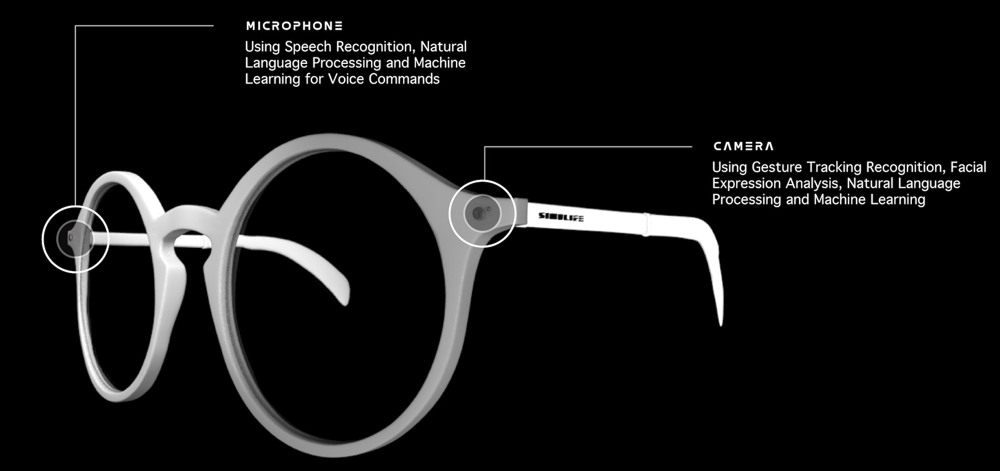

To conceptualize these glasses for couples testing their compatibility in cohabitation, I delved into the complexities of relationships and daily living. Envisioning a product that would offer a real-time glimpse into shared life, simulating common scenarios couples face.
The design process was influenced by psychological studies on compatibility and the practicalities of domestic routines. I aimed to create a user experience that was as authentic as possible, integrating sensors and augmented reality to provide feedback and insights on harmonious living, thereby helping couples make informed decisions about their future together.
It's about providing a safe space to explore and understand each other's habits, preferences, and compatibility without the irreversible commitment of actually moving in together. By offering a window into the future of their cohabitation, the glasses are not just a technological innovation but a medium for deeper emotional intelligence and interpersonal awareness.
